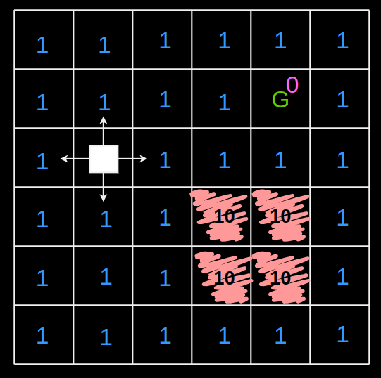
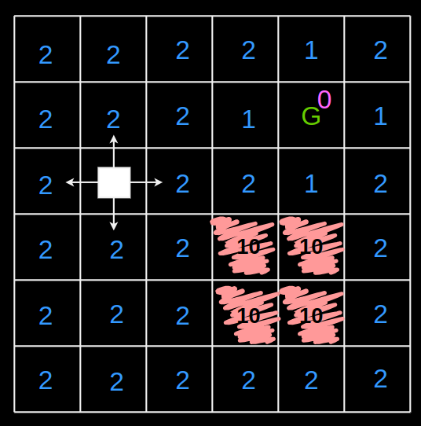
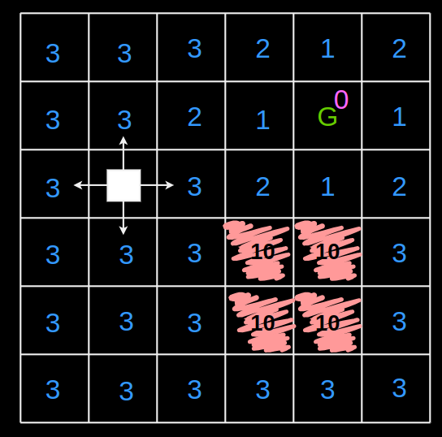

DP: Overview
Background
An action is a specific decision or choice made at a particular state of a problem. Actions are the individual steps taken by an agent to transition from one state to another. In dynamic programming, the choice of action at each state is typically guided by the policy, which determines the best course of action to achieve the desired objective.
A policy refers to a strategy or a rule that guides decision-making at each state of a problem. It defines what action to take at each state in order to maximize some objective, such as maximizing cumulative rewards or minimizing costs. A policy can be deterministic, meaning it prescribes a single action for each state, or stochastic, meaning it prescribes a probability distribution over actions for each state.
In general, an optimal policy is not unique - from a given state, it is possible to take 2 different optimal actions at still end up with the same cost. The optimal cost-to-go, however, is unique.
If a constant, say 10, is added to the cost-to-go at every node/cell, i.e. offsetting the cost-to-go, then the optimal cost-to-go will be wrong just in its value but the optimal policy will still be correct. This is what happens when initialising the cost-to-go with a random constant; it is not the case when initialising with 0.
Description
The algorithm used to solve the shortest path problem in computer science is Dynamic programing. The aim is to find the shortest path to a goal on a weighted directed graph, where the edges:
-
Are equivalent to taking different actions from the current state
-
Have associated costs
In CS, DP is considered to be a recursive algorithm that solves backwards from a goal.
There are different graph search algorithms like Dijkstra's algorithm that solve from a particular initial condition (in the forward or backward direction) to the goal. DP is the algorithm that solves the graph simultaneously; it computes the optimal policy from all possible initial conditions.
DP also has exact connections to the continuous time formulation.
The cost to go function is very important in controls - if the it can be found, then all the controller needs to do is to take actions to minimise it.
DP and Value iteration are used interchangeably, but here it is defined as follows:
- DP: Finite time
- Value Iteration: Infinite time or infinite horizon
Examples of the importance of the Cost-to-go function
- Connection with Lyapunov function
- An extension: Dissipation inequalities connected with robust control
- Able to make bounds on what happens to the Cost-to-go estimate if there is uncertainty
Definitions
- Discrete states
$$s_t \in S$$
-
Discrete actions
Finite set of edges or actions that can be taken from a state.
$$a_i \in A$$
-
Discrete time
Finding out the next state involves the system dynamics.
$$s[n+1] = f(s[n], a[n])$$
- Cost function
- Edge cost
For a weighted shortest path problem, this is the cost of traversing some edge.
$$g(s,a)$$
- Total cost
The total cost of a trajectory is the accumulation of the 1 step costs.
$$\sum_n g(s,a)$$
The sum goes to infinite or finite time.
In optimisation theory, a trajectory can be scored in many ways. An example would be to score it as an additive cost along the trajectory. Let's say the cost function is scoring based on the time to goal, then:
$$
g(s,a) = \left\{
\begin{array}{ c l }
1 & \quad \text{if } s \neq s_{goal} \\
0 & \quad \text{otherwise}
\end{array}
\right.
$$
The cost keeps accumulating until the goal is reached. For the minimum time problem, the time to goal cost fits perfectly in DP's additive cost structure.
DP equation
Non-recursive form
$$
J^*(s_i) = \min_{a[\cdot]} \sum^\infty_{n=0} g(s_i[n], a[n])
\quad s[0] = s_i
$$
- $J(s_i)$
Cost to go (or value function using rewards instead which the language of RL). This is the cost that is expected to be incurred to get to the goal or to execute the remaining trajectory. The cost increases the farther the current state is from the goal. It is a function of state - from every node, the total cost to go can be computed.
- $J^*(s_i)$
If the optimal policy is followed from the current state, where the best possible actions are always taken to minimise the cost, then $J^*$ is the cost that would be incurred to get to the goal.
- $\sum^\infty_{n=0} g(s_i[n], a[n])$
Accumulation of the costs over the trajectory that remains. Ensure the cost converges for an infinite trajectory.
- $\min_{a[\cdot]}$
Over the trajectory that remains, the action that returns the minimal long term cost is taken at every step. This is hard to search over since an infinite list of decisions (due to an infinite trajectory) might need to be made at every step.
Recursive form
$$
J^*(s_i) = \min_a \left[g(s,a) + J^*(f(s,a)) \right]
$$
- $\min_a$
The search space is finite since the minimisation is performed only over all actions from the current state. The $a$ that minimises the above equation is the optimal action.
- $J^*(f(s,a))$
The optimal cost to go from the next step.
$$
J^*(f(s,a)) = \min_{a[\cdot]} \sum^\infty_{n=1} g(s_{i+1}[n], a[n])
$$
- $g(s,a)$
The cost of taking a single step $a$.
Optimality condition
Given a graph with weights and edges, an optimal controller needs to have a certificate of optimality that guarantees that it will take the optimal path from every initial condition. This would also be a way to check for optimality.
The certificate has to satisfy the self-consistency condition, i.e. by taking the action suggested by the controller's policy under $J^*(s_i)$, $J^*(f(s,a))$ can be found. This would mean:
- $J^*(s_i)$ is indeed optimal
- The policy is optimal since it gives the minimal action to take, i.e. the action suggested by the optimal controller is in fact $\min_a g(s,a)$
The certificate also turns into an algorithm for finding the optimal controller. This is called the Bellman equation.
The algorithm
Start
$\hat{J}^*$ is the estimate of the optimal cost-to-go. It is initialised to random values all over the graph. $J$ is just a vector.
Update
On every iteration of the algorithm, as the estimates at various nodes/states get updated with the one step cost, plus the estimate of the future cost, $\hat{J}^*$ almost converges to $J^*$, i.e. $\hat{J}^* \rightarrow J^* + c$. Because of the way the update is formulated, there is a constant offset.
$$
\forall i \quad \hat{J}^*(s_i) = \min_a \left[g(s,a) + \hat{J}^*(f(s,a)) \right]
$$
Grid world
The aim is for the bot to reach the goal in minimum time. There is a pit of death. The bot cannot move diagonally. Each grid cell can be considered to be a node of a graph. This is just a different representation of a graph search problem.
The cost at every node can be written as:
$$
g(s,a) = \left\{
\begin{array}{ c l }
0 & \quad \text{at goal} \\
10 & \quad \text{at pit} \\
1 & \quad \text{otherwise} \\
\end{array}
\right.
$$

1st iteration

2nd iteration

3rd iteration
$J$ is assumed to be $0$ at every cell initially. At every iteration, it gets updated. After the first step, $J$ just becomes equal to the cost function at every cell. The knowledge of the path to the goal emerges with more iterations as costs propagate backwards and begin to converge. DP solves this recursively.
The grid can also be updated in a distributed manner. Here it was done in a sweep, but random states could be updated and as long as all states are visited with some probability, then the optimal policy can be found. This would be the case for a bunch of distributed robots making their own decisions (local updates) asynchronously, in a random order. The optimal c2g can still be found, up to a scalar, if all states are visited.
58:20